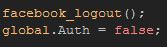

Tutorial
Page 8 of 8
Logging out
This final section is for logging out of Facebook.
Normally you would not want to have the user log out, but there may be moments where you wish the current user to log out of your game
so that another user can log in (or some other reason) and so GameMaker:Studio gives you that option. for this, just create a new
object and call it "obj_LogOut", give it a sprite and then add this code to the left mouse button PRESSED event:

Simple, no? The user is now logged out of Facebook, so we set the global.Authvariable to false to prevent any of the buttons we have
created previously from working. this may not be strictly necessary as some of them will just do nothing, and others will request that the user
logs in again before functioning, but in general it is better to handle these situations yourself so that all users have the same experience and you
can catch and prevent any possible errors.
Note that this does not in any way cancel the initialisation of the Facebook functions, it only removes the authorisation of the game to post to anyones
wall. So, if you have a log in button you have no need to initialise Facebook once again as it will still be functioning.